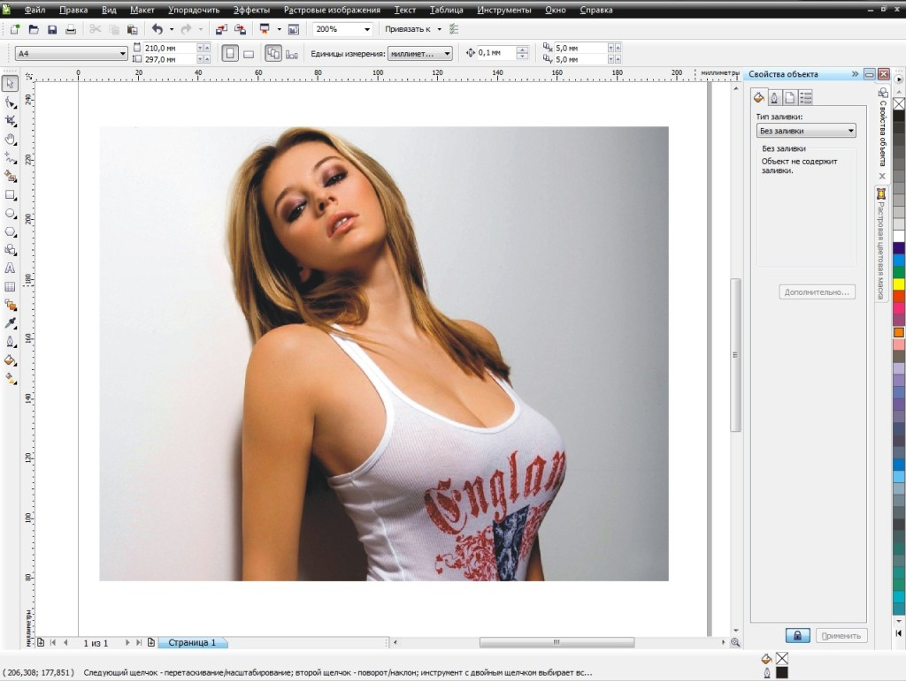

Особенности интерфейса Сoreldraw
Сorel draw — мощный редактор векторной графики. Широкий функционал программы позволяет полноценно обрабатывать не только изображения, но и чертежи, схемы, графики. Интерфейс Сorel draw весьма удобен, без лишних деталей, частично напоминает другие подобные редакторы (Adobe Illustrator, OpenOffice Draw).

Рабочая панель Сorel draw состоит из окон. В случае необходимости, их можно разместить в любой части экрана, включить или отключить ненужные. Каждому окну соответствует определенный набор функций. Это добавление шаблонов, картинок, фотографий, изменение шрифта, уменьшение или увеличение вставок и многие другие.
Достоинства Сorel draw
Из плюсов программы стоит выделить:
-наличие множества высококачественных рисунков, фотографий, шаблонов, шрифтов, рамок и узоров
-простой, удобный интерфейс
-точность форм
-поддержка всех возможных форматов изображений
-возможность клавиатурного ввода параметров
Недостатки Сorel draw
Несмотря на достоинства, Сorel draw обладает и недостатками, а именно:
-отсутствие поддержки изображений размером меньше 30х30
-при экспорте рисунка просматриваются белые полосы по краям, которые потом нужно убирать
-сложность в подборе цвета заливки (кроме белого), подходящего к палитре RGB
Вы так и не ответили на вопрос Маргариты, как и где скачать?
Алёна здравствуйте. Вы хотите скачать программу CorelDRAW. Её я скачал к себе на ПК. Вот таким способом. Первое открыл яндекс и поисковой строке написал CorelDRAW бла бла бла и нажал поиск.После этого открылись файлы скачивания и в самом верху первая надпись скачать её на ПК. А дальше загружаете и следуете советам мастера установки.
Как его скачать?
Здравствуйте!
И как же можно скачать Сoreldraw ?
Все баннеры на растяжках , на улице сделаны на Кореле. Возможности программы широчайшие , макет можно изготовить любых размеров. А порисовать , если что-то понимаете , одно удовольствие.
При первом открытии программа меня напугала. Функционал показался сложным, думала никогда не разберусь. В итоге первый свой коллаж сделала уже после 1.5 недели изучения. Сейчас даже не понимаю, чего так опасалась. Все очень просто, понятно. Важно еще и то, что очень много превосходных уроков для изучения программы.
Буду советовать друзьям и коллегам
Отличная программка спасибо
Работать с этой программой начала недавно, но почти со всем разобралась. Учусь в технаре и часто приходиться работать с программами такого типа. Эта для меня самая удобная. Рекомендую!
Что бы я делал если бы не знал данную программу и не имел опыт работы с ней. На фрилансе такой навык довольно востребован и если вы умеете работать с данной графикой, то найти работу не проблема.
Да согласна Виктор, только вот фантазия еще нужна. Я создаю рекламные баннеры в этой программе под заказ. Порой заказчик не знает сам чего хочет, спасает множество строенных шрифтов и картинок в Corel Draw
Был полгода назад Illustrator, которым пользовался меньше месяца и попробовал установить его аналог — СOREL DRAW, и попользовавшись этой программой я понял, что буду теперь всегда к ней прибегать когда нужно будет создать объект векторной графики.
Я и мои коллеги по работе часто прибегаем к использованию СOREL DRAW, с помощью этой программы можно эффективно составлять чертежи и схемы, а также макеты. Все это пригодится для некоторых видов работ. Ну и конечно же для веб-дизайнера это один из главных инструментов.
Да я согласна с Вами, сама часто использую его по работе. Мне нравится что дизайн и интерфейс программы очень грамотно построен. Все нужные инструменты находятся под рукой и легко используются.
Выбирая между СOREL DRAW и Illustrator я всё же остановился на первом варианте, он привлекает своей простотой и набором инструментом, достаточным для того, чтобы создать красивый логотип.
Набор возможностей, предоставляемых программой СOREL DRAW действительно обширен. Любой дизайнер должен уметь работать с векторной графикой, а хорошим надёжным помощником и инструментом в этом может послужить данная программа.
Для меня неотъемлемой частью в работе дизайнера является такая важная часть как работа с векторной графикой, необходимой теперь в любом сегменте интернета и в вопросах оформлении того или иного проекта бизнеса. Отличным вариантом я считаю программу СOREL DRAW, имеющей множество функций.
Учится рисовать в этой программе одно удовольствие, так как она очень понятна и проста, а главное это то что тут многофункциональная панель в которой вы ни когда не заблудитесь, проверено на личном опыте.
А я вот-вот только начала изучать эту программу. На первый взгляд программа показалась мне сложно, столько непонятных функций, но с ними не так уж и сложно разобраться. Вот и деньги не тратили — сами сделали визитки для семейного бизнеса. :)
Нужная программа для работы в сфере проектирования мебели и дизайна интерьеров. Можно как нарисовать простой чертеж, так и сделать заливки и представить более реалистичный макет. Мы пользуемся этой программой уже много лет.
По работе часто сталкиваюсь с файлами выполненным в векторном редакторе Corel Draw. Быстро открываются, позволяют рассмотреть мельчайшие объекты сетей, быстро выводятся на плоттер.
Очень удачный продукт, пользуюсь более десяти лет CorelDraw, начинал с визитки, теперь в основном работаю с баннерами, объекты векторные удобно масштабировать — они не теряют в качестве
Точность это конек Corewdraw, маркеры- узлы, привязки позволяют строить сложные и взаимосвязанные проекты иногда даже черчу в кореле, когда по быстрому надо сделать эскиз проекта
Возможностей, которая предоставляет этот редактор векторной графики просто впечатляет. Если хорошо освоиться и иметь креатив, можно с лёгкостью и удовольствием создавать самые высококлассные векторные логотипы, макеты визиток и баннеров и т.д.
Первое время когда я начинала изучать эту программу я часто путалась, когда пыталась перерисовать рисунок с шаблона, но уже через некоторое время у меня стало неплохо получаться и мне стало нравится моя профессия.
Интерфейс программы очень удобен тем что, расположенные опции находятся по разные стороны, да к тому же сверху над окном есть основная панель где можно настроить саму программу.
Устанавливал много подобных программ но только эта грузиться быстрее всех, и рабочая среда не столь сложная как казалось бы на первый взгляд, теперь я только в ней логотипы делаю.
Это единственная программа которая помогла мне отредактировать график на работе. Не мог исправить в графике цифры, так эта программа помогла очень. Сейчас советую всем ее в офисе .Классная прога )
В Corel по работе рисую разнообразные бирки и ярлычки. Программа идеальна для точных измерений. А вот рисовать в ней совершенно не умею, обычно переношу сюда уже готовое изображение и делаю отрисовку. В общем, логотип мне легче нарисовать в другой программе, но Corel DRAW люблю, обожаю разбирать готовые векторные изображения на составные части и творить что-то свое)
Приличная программа для работы с фото, коллажами и картинками. Работаю только в ней, корректирую фото и компоную стенгазеты. Удобнее и понятней программы пока не нашла, рекомендую скачать.
Программа достойная, работаю с ней не очень долго, но она меня выручает — делаю плакаты для стендов, использую только ее. Уже привыкла — получается быстро и легко, хорошая удобная панель и возможности.
Да в Corel Draw не просто залить область нужным цветом, зато с точностью до мм можно построить объект, компоновать слои и расставлять объекты, выравнивая их относительно друг друга.
Для создания разных тематических макетов, картинок для презентаций пользуюсь этим векторным редактором. Загружаю и растровые файлы, когда совсем нет времени, а работа горит.
При помощи CorewDraw любое растровое изображение может стать векторным. Это очень выручает, когда требуется создать уникальную по шрифту подпись, из имеющегося стандартного шрифта
Corel Draw я скачал и установил пару месяцев тому назад, сначала какое-то время выбирал между Adobe Illustrator и этой, и в итоге установил именно эту программу. В принципе Corel Draw обладает почти таким же набором функций как и его большой известный аналог, но это личное дело каждого.
COREL DRAW , это программа подходит для творчества. В ней много функций. Лично я, корректирую любительские фотографии. Получается конечно классно.Эффект замечательный. Мне она очень нравится .
Любимая программа после Illustrator. Corel Draw имеет приятный, легкий интерфейс и не виснет, причем набор инструментов достаточно впечатляет. Еще нравится как выполнен дизайн.
Самый четкий графический редактор, пользуюсь по работе много — версия последняя, удобно, практично, не тормозит. Наиболее оптимальный для новичков, если научитесь в нем работать, то уже более сложные осилить будет легче.
Привычная и традиционная программа удобная для просмотра и редактирования изображений, освоила ее очень быстро, в этом большой ее плюс. Понятная и максимально удобная в работе, мне нравится намного больше всех остальных версий.
Жаль, что новая версия CorelDRAW заточена только под Windows. На работе все компы линуксовые, на них не ставится. Хотя более ранние первые версии и на линукс, и даже на Macintosh шли.
Ни чего сложного тут и нет, главное это пару дней посидеть за этой программой и поизучать ее, работать в коралл драв очень удобно, так как панель простая и без наворотов, думаю что даже новичок в ней справится.
COREL DRAW идеален для рисования схем, различных буклетов, открыток, плакатов. Я рисую в ней визитки, хорошо получается. Программа для творчества. Интерфейс легкий, проще чем фотошоп.
Рабочее пространство Corel Draw довольно удобоваримое для пользователей. Новичкам, конечно, проще, если сначала кто-по подскажет, но и самому можно вникнуть и хитрости векторной графики освоить.
Вот что меня иногда заставляет пользоваться Corel Draw вместо Photoshop так это наличие простого и внятного интерфейса, а также быстрый запуск без зависания, что часто случается с Photoshop.
Для работы с векторной графикой, считаю самый удобный редактор. Жаль только формат cdw толком больше ни в чем не посмотришь без корела. С заказчиками иногда этого проблемы возникают.
Очень хорошая программа! Недавно начала ее изучать, даже книжку прикупила. Только требует усидчивости и терпения. Про недостатки пока не очень ясно — с достоинствами до конца не разобралась.